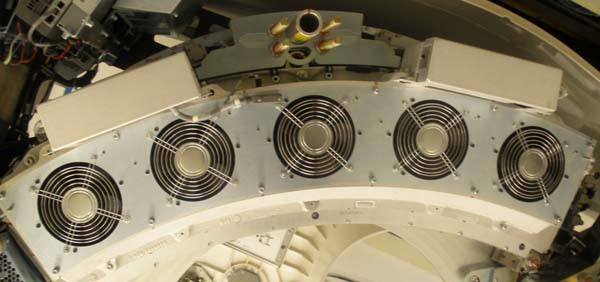
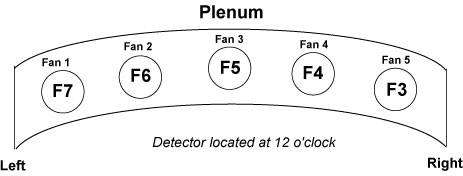
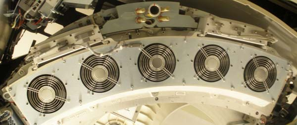
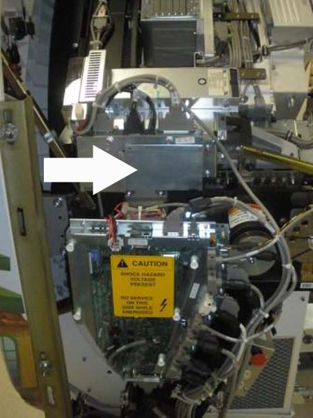
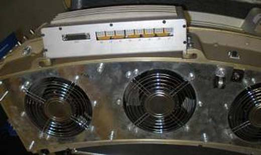
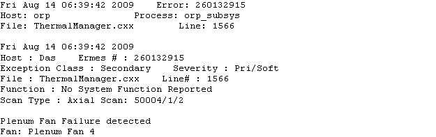
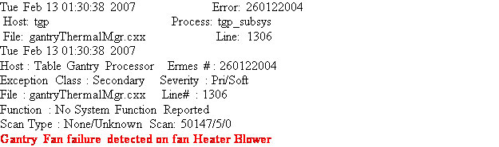
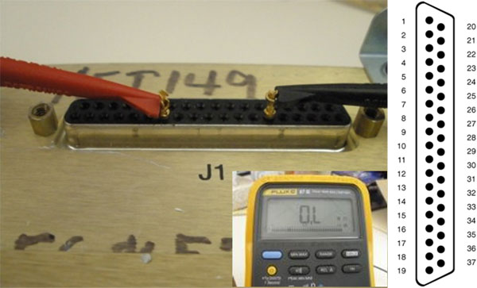
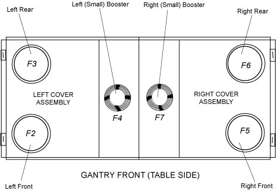
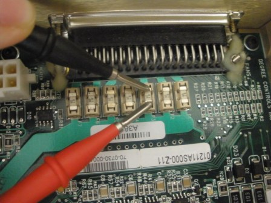

Operating Documentation
Direction 5193574-800, Rev# 22
LightSpeed 7.X Service Methods
Module Version 1.0, Version Date 6/28/11
Operating Documentation |
This procedure is for troubleshooting a system exhibiting CFC related failures, identified by either physical inspection of a fan not working or an error message in the GE Syslog. There are two separate CFC’s. The rotating CFC controls the five fans in the detector plenum, meanwhile, the stationary CFC controls the fans on the top covers and the heater blower fan. See Section 2 for physical Identification of fans.
Both VCT and HD CFC’s use the same snap-in fuses which are replaceable. However, some VCT systems may have an older CFC model with non-replaceable soldered-in fuses. This model can be identified by the Molex connectors, See Illustration 5. The fuse replacement is only for CFC with the following Part No’s: 5141497, 5141494-2, 5141497-3 and 5195573.
Illustration 1: Rotating CFC with cable safety covers.

Illustration 2: Rotating Plenum Fans

Illustration 3: Rotating CFC with cable covers removed.

Illustration 4: Stationary CFC

Illustration 5: Non-repairable CFC with Molex Connectors (Part No. 5113960)

| NOTE: | Fuse replacement is not possible with the Molex Style CFC. If failure occurs, replace the entire CFC assembly. |
Illustration 6: Plenum Fan Failure Error Message - Fan 4

Illustration 7: Gantry Stationary Fan Failure Error Message

Check the GE Syslog for a Fan failure message. Follow the steps for your fan type below.
Remove Gantry Side, Top and Front Covers.
Turn off [120VAC], [HVDC ENABLE] and [AXIAL DRIVE ENABLE] switches on the Service Switch Panel
Locate rotating CFC and remove the CFC safety cover. There are four 3mm Hex screws, remove the two on top and loosen the two on bottom.
Remove J1 connector on CFC.
Use a multi-meter and sub-D pins to measure Resistance across the corresponding fuse on the J1 connector (See Illustration 8) Refer to Table 1 for CFC Fuse pinout.
| NOTE: | Measuring an Open circuit or open loop indicates a blown fuse. Measuring the fuse through the circuit, J1, typically a good circuit measures greater than 100kOhms. |
Illustration 8: Fuse Test on Rotating CFC with J1 Illustration

If a fuse is bad, remove CFC Assembly from Detector Plenum held by six 6mm Hex nuts. Open the CFC Cover held by six 2.5mm Hex nuts. find and replace the blown fuse. See Table 1for identification and for Table 2 FRU list.
If the fuse is good, order a new CFC Assembly and replace. Refer to procedure: Replacement > Gantry> DAS and Detector > Heater Controller and Fan Controller Replacement
Re-install the CFC, reconnect the CFC Cables and return system to original condition.
Turn gantry and console [ON]. Inspect the fans to see if they are working. Check the GE Syslog for a Fan Failure message.
Remove Gantry side and top covers.
Illustration 9: Stationary Fans Top View

Turn off [120VAC], [HVDC ENABLE], and [AXIAL DRIVE ENABLE] switches.
Locate Stationary CFC Assembly (Left side) and remove stationary CFC cover. See Illustration 4.
Use a multi-meter to measure Resistance across the corresponding fuse. See Illustration 10. For Fuse location refer to Table 1.
Illustration 10: Fuse Test on Stationary Side

| NOTE: | Measuring an Open circuit or open loop indicates a blown fuse. (Illustration 8 indicates open loop with “O.L” on Fluke 87). Measuring the fuse through the circuit, J1, typically a good circuit measures greater than 100kOhms. |
If the fuse is bad, replace the blown fuse. See Table 1for identification and Table 2 for FRU part.
If the fuse is good, order a new CFC assembly and replace. For replacement procedure see: Replacement>Gantry>DAS and Detector>Heater Controller and Fan Controller Replacement.
Re-install the CFC, re-connect CFC cables and return system to original condition.
Turn gantry and console [ON]. Inspect the fans to verify they are operational. Check the GE Syslog for fan failure message.
Table 1: CFC Pinout J1 Connector
Rotating Fan Location | Stationary Fan Location | Pin | Signal | Fuse Location | Fuse Type |
| Fan 1 | Right Booster | J1-1 | 48V | F7 | 2A |
| J1-12 | GND | ||||
| Fan 2 | Right Rear | J1-3 | 48V | F6 | 2A |
| J1-6 | GND | ||||
| Fan 3 | Right Front | J1-5 | 48V | F5 | 2A |
| J1-2 | GND | ||||
| Fan 4 | Left Booster | J1-7 | 48V | F4 | 2A |
| J1-10 | GND | ||||
| Fan 5 | Left Rear | J1-9 | 48V | F3 | 2A |
| J1-14 | GND | ||||
| Fan 6 | Left Front | J1-11 | 48V | F2 | 2A |
| J1-8 | GND | ||||
| Fan 7 | Heater Blower | J1-13 | 48V | F1 | 5A |
| J1-4 | GND |
Table 2: FRU Part Number
| Fuse | Part Number | Quantity |
| 5 amp - Fuse 454 Series | 5202055 | 1 |
| 2 amp - Fuse 454 Series | 5202056 | 1 |